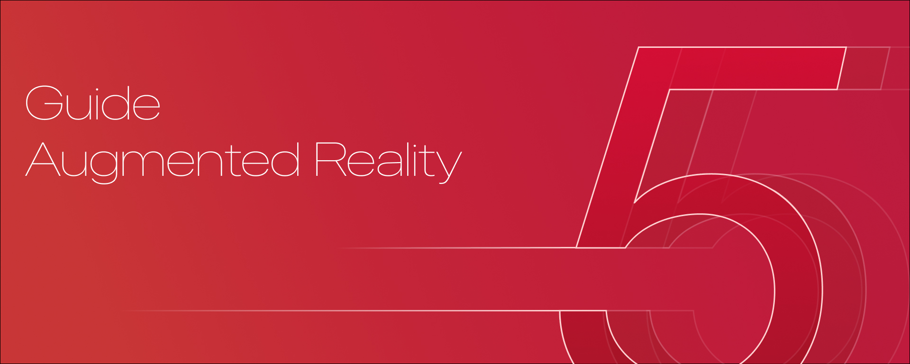

Аннотация проекта
Путешествия и новые места всегда увлекательны. Однако, не всегда обычные экскурсии приносят полное удовольствие, особенно когда дело касается детей. Их сложно заинтересовать, что уж говорить о том, чтобы удержать их внимание. Чтобы помочь родителям с детьми получать удовольствие от посещения музеев без постоянных отвлечений, мы разработали приложение с роботом-экскурсоводом для выставки "Робостанция". Таким образом, информация о экспонатах будет представлена в интерактивной форме, способствующей ее более качественному усвоению.
